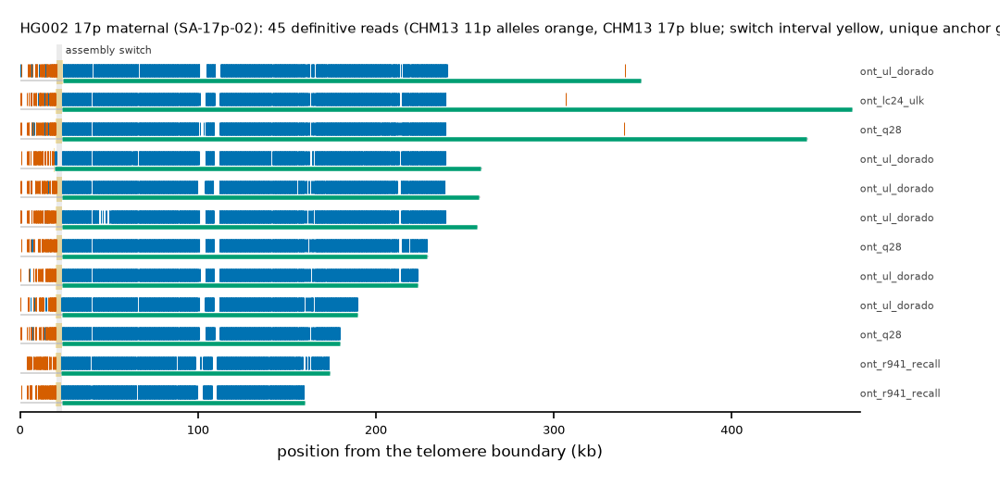

HG002 17p maternal: SA-17p-02
Claim HG002#2#chr17_MATERNAL#L. All claims
- cohort
- HG002 Q100
- individual
- HG002
- haplotype
- maternal
- arm
- 17p
- allele
- SA-17p-02 (foreign)
- model
- donor CHM13 11p, proximal CHM13 17p, recipient CHM13 17p, pattern DP
- claimed end(s)
HG002#2#chr17_MATERNAL#L- assembly switch
- 16,501 bp from the telomere boundary; on CHM13 chr17:5615; own-window projection 20300-23500 bp
- v1 verdict
- confirmed (confirmed)
- definitive tier
- definitive (>= 2 datasets)
- reads
- 62 conclusive switch-concordant, 0 discordant, 0 contradicting, 53 consistent; 45 definitive (ont_duplex,ont_lc24_ulk,ont_q28,ont_r941_recall,ont_ul_dorado)
- by tier
- definitive:45;conclusive_unique_anchor_off_end:17;consistent:53
- source
- HG002 Q100 v1.1 public read alignments (16 files; 12 independent datasets after molecule de-duplication)

Conclusive and contradicting reads (88)
73 further reads are consistent (switch test passed, but no terminal telomere, anchor or integrity); they are
listed in reads.tsv.gz. Switch: 95% interval in subtelomere coordinates (kb from the
telomere boundary) and projected on CHM13 17p. Each samtools command prints the read's record
from its public file (CRAM: add the CHM13 v2.0 FASTA as -T).
| read | dataset | tier | length | switch (subtelomere, kb) | switch on CHM13 | donor units / purity | proximal units / purity | anchor (CHM13, MAPQ, unique) | own-assembly best end | fetch |
|---|---|---|---|---|---|---|---|---|---|---|
03fec338-4d8d-4745-b264-bc96776431ac;f0f9718d-5c1a-4f70-90ab-4bfeb45c3e27 | ont_duplex | definitive | 40,225 | 20.5-23.5 | chr17:12330-15330 | 51 / 0.88 | 79 / 1.00 | chr17:29901-45600, 60, 15.7 kb | HG002#2#chr17_MATERNAL#L (99.8%) ✓ | samtoolssamtools view -F 0x900 -X 'https://human-pangenomics.s3.amazonaws.com/T2T/HG002/assemblies/polishing/HG002/v1.1/mapping/ont_r10_duplex/hg002v1.1_ont_r10_duplex.pri.bam' 'https://human-pangenomics.s3.amazonaws.com/T2T/HG002/assemblies/polishing/HG002/v1.1/mapping/ont_r10_duplex/hg002v1.1_ont_r10_duplex.pri.bam.bai' 'chr17_MATERNAL:1-51001' | awk -v r='03fec338-4d8d-4745-b264-bc96776431ac;f0f9718d-5c1a-4f70-90ab-4bfeb45c3e27' '$1==r' |
352dea17-71cc-4a34-b057-39902f9c45a1;ef82e849-0654-41b2-b56f-1d6c06d5f75c | ont_duplex | definitive | 47,148 | 19.5-20.1 | chr17:11327-11927 | 52 / 0.92 | 113 / 1.00 | chr17:11928-52449, 60, 40.5 kb | HG002#2#chr17_MATERNAL#L (99.9%) ✓ | samtoolssamtools view -F 0x900 -X 'https://human-pangenomics.s3.amazonaws.com/T2T/HG002/assemblies/polishing/HG002/v1.1/mapping/ont_r10_duplex/hg002v1.1_ont_r10_duplex.pri.bam' 'https://human-pangenomics.s3.amazonaws.com/T2T/HG002/assemblies/polishing/HG002/v1.1/mapping/ont_r10_duplex/hg002v1.1_ont_r10_duplex.pri.bam.bai' 'chr17_MATERNAL:1-51001' | awk -v r='352dea17-71cc-4a34-b057-39902f9c45a1;ef82e849-0654-41b2-b56f-1d6c06d5f75c' '$1==r' |
4e9aac66-fc52-4a5a-ab01-036eaaddb738 | ont_lc24_ulk | definitive | 469,826 | 19.9-23.5 | chr17:11723-15323 | 51 / 0.88 | 1,009 / 1.00 | chr17:29901-474032, 60, 442.8 kb | HG002#2#chr17_MATERNAL#L (99.7%) ✓ | samtoolssamtools view -F 0x900 -X 'https://human-pangenomics.s3.amazonaws.com/T2T/HG002/assemblies/polishing/HG002/v1.1/mapping/ont_lc24_ulk/hg002v1.1_ont_lc24_ulk.pri.bam' 'https://human-pangenomics.s3.amazonaws.com/T2T/HG002/assemblies/polishing/HG002/v1.1/mapping/ont_lc24_ulk/hg002v1.1_ont_lc24_ulk.pri.bam.bai' 'chr17_MATERNAL:1-51001' | awk -v r='4e9aac66-fc52-4a5a-ab01-036eaaddb738' '$1==r' |
ebc0f243-a520-49fa-a87c-bfb0f7bf5582 | ont_lc24_ulk | definitive | 102,966 | 19.9-20.1 | chr17:11724-11924 | 48 / 0.96 | 380 / 1.00 | chr17:11925-106604, 60, 94.7 kb | HG002#2#chr17_MATERNAL#L (99.7%) ✓ | samtoolssamtools view -F 0x900 -X 'https://human-pangenomics.s3.amazonaws.com/T2T/HG002/assemblies/polishing/HG002/v1.1/mapping/ont_lc24_ulk/hg002v1.1_ont_lc24_ulk.pri.bam' 'https://human-pangenomics.s3.amazonaws.com/T2T/HG002/assemblies/polishing/HG002/v1.1/mapping/ont_lc24_ulk/hg002v1.1_ont_lc24_ulk.pri.bam.bai' 'chr17_MATERNAL:1-51001' | awk -v r='ebc0f243-a520-49fa-a87c-bfb0f7bf5582' '$1==r' |
d3f8f606-5709-4f98-9d6f-39502a083a90 | ont_lc24_ulk | definitive | 61,791 | 20.3-23.5 | chr17:12113-15313 | 48 / 0.92 | 178 / 1.00 | chr17:29901-65655, 60, 35.8 kb | HG002#2#chr17_MATERNAL#L (99.7%) ✓ | samtoolssamtools view -F 0x900 -X 'https://human-pangenomics.s3.amazonaws.com/T2T/HG002/assemblies/polishing/HG002/v1.1/mapping/ont_lc24_ulk/hg002v1.1_ont_lc24_ulk.pri.bam' 'https://human-pangenomics.s3.amazonaws.com/T2T/HG002/assemblies/polishing/HG002/v1.1/mapping/ont_lc24_ulk/hg002v1.1_ont_lc24_ulk.pri.bam.bai' 'chr17_MATERNAL:1-51001' | awk -v r='d3f8f606-5709-4f98-9d6f-39502a083a90' '$1==r' |
7eb9fce6-76b3-4bca-98bb-4accae700107 | ont_lc24_ulk | definitive | 101,193 | 20.1-23.5 | chr17:11928-15328 | 50 / 0.92 | 374 / 1.00 | chr17:29901-105451, 60, 75.5 kb | HG002#2#chr17_MATERNAL#L (99.7%) ✓ | samtoolssamtools view -F 0x900 -X 'https://human-pangenomics.s3.amazonaws.com/T2T/HG002/assemblies/polishing/HG002/v1.1/mapping/ont_lc24_ulk/hg002v1.1_ont_lc24_ulk.pri.bam' 'https://human-pangenomics.s3.amazonaws.com/T2T/HG002/assemblies/polishing/HG002/v1.1/mapping/ont_lc24_ulk/hg002v1.1_ont_lc24_ulk.pri.bam.bai' 'chr17_MATERNAL:1-51001' | awk -v r='7eb9fce6-76b3-4bca-98bb-4accae700107' '$1==r' |
934c7a8b-6097-4c72-8f4d-ff4b3bbbae4b | ont_q28 | definitive | 129,155 | 20.3-23.5 | chr17:12111-15311 | 49 / 0.94 | 473 / 1.00 | chr17:29901-126131, 60, 96.2 kb | HG002#2#chr17_MATERNAL#L (99.8%) ✓ | samtoolssamtools view -F 0x900 -X 'https://human-pangenomics.s3.amazonaws.com/T2T/HG002/assemblies/polishing/HG002/v1.1/mapping/ont_epi2me_q28/hg002v1.1_ont_epi2me_q28.pri.bam' 'https://human-pangenomics.s3.amazonaws.com/T2T/HG002/assemblies/polishing/HG002/v1.1/mapping/ont_epi2me_q28/hg002v1.1_ont_epi2me_q28.pri.bam.bai' 'chr17_MATERNAL:1-51001' | awk -v r='934c7a8b-6097-4c72-8f4d-ff4b3bbbae4b' '$1==r' |
5d34981b-c70c-436d-a2fb-1a18d63c32f4 | ont_q28 | definitive | 230,461 | 20.3-23.5 | chr17:12140-15340 | 47 / 0.94 | 954 / 1.00 | chr17:29901-229816, 60, 199.9 kb | HG002#2#chr17_MATERNAL#L (99.6%) ✓ | samtoolssamtools view -F 0x900 -X 'https://human-pangenomics.s3.amazonaws.com/T2T/HG002/assemblies/polishing/HG002/v1.1/mapping/ont_epi2me_q28/hg002v1.1_ont_epi2me_q28.pri.bam' 'https://human-pangenomics.s3.amazonaws.com/T2T/HG002/assemblies/polishing/HG002/v1.1/mapping/ont_epi2me_q28/hg002v1.1_ont_epi2me_q28.pri.bam.bai' 'chr17_MATERNAL:1-51001' | awk -v r='5d34981b-c70c-436d-a2fb-1a18d63c32f4' '$1==r' |
de7fd86f-bd6f-4fd6-9180-2f26e3e1872f | ont_q28 | definitive | 47,034 | 19.9-23.5 | chr17:11724-15324 | 47 / 0.89 | 107 / 1.00 | chr17:29901-51454, 60, 21.6 kb | HG002#2#chr17_MATERNAL#L (99.9%) ✓ | samtoolssamtools view -F 0x900 -X 'https://human-pangenomics.s3.amazonaws.com/T2T/HG002/assemblies/polishing/HG002/v1.1/mapping/ont_epi2me_q28/hg002v1.1_ont_epi2me_q28.pri.bam' 'https://human-pangenomics.s3.amazonaws.com/T2T/HG002/assemblies/polishing/HG002/v1.1/mapping/ont_epi2me_q28/hg002v1.1_ont_epi2me_q28.pri.bam.bai' 'chr17_MATERNAL:1-51001' | awk -v r='de7fd86f-bd6f-4fd6-9180-2f26e3e1872f' '$1==r' |
ae3ab923-4d05-44a4-a733-91873b5b5adf | ont_q28 | definitive | 100,285 | 20.1-23.9 | chr17:11460-15260 | 54 / 0.87 | 373 / 1.00 | chr17:30129-105451, 60, 75.3 kb | HG002#2#chr17_MATERNAL#L (97.2%) ✓ | samtoolssamtools view -F 0x900 -X 'https://human-pangenomics.s3.amazonaws.com/T2T/HG002/assemblies/polishing/HG002/v1.1/mapping/ont_epi2me_q28/hg002v1.1_ont_epi2me_q28.pri.bam' 'https://human-pangenomics.s3.amazonaws.com/T2T/HG002/assemblies/polishing/HG002/v1.1/mapping/ont_epi2me_q28/hg002v1.1_ont_epi2me_q28.pri.bam.bai' 'chr17_MATERNAL:1-51001' | awk -v r='ae3ab923-4d05-44a4-a733-91873b5b5adf' '$1==r' |
cc8a34e1-11e8-4399-afb0-c44557ba3c34 | ont_q28 | definitive | 443,200 | 19.9-23.5 | chr17:11722-15322 | 50 / 0.86 | 1,004 / 1.00 | chr17:29901-449585, 60, 419.7 kb | HG002#2#chr17_MATERNAL#L (99.7%) ✓ | samtoolssamtools view -F 0x900 -X 'https://human-pangenomics.s3.amazonaws.com/T2T/HG002/assemblies/polishing/HG002/v1.1/mapping/ont_epi2me_q28/hg002v1.1_ont_epi2me_q28.pri.bam' 'https://human-pangenomics.s3.amazonaws.com/T2T/HG002/assemblies/polishing/HG002/v1.1/mapping/ont_epi2me_q28/hg002v1.1_ont_epi2me_q28.pri.bam.bai' 'chr17_MATERNAL:1-51001' | awk -v r='cc8a34e1-11e8-4399-afb0-c44557ba3c34' '$1==r' |
17a2266e-c9c9-4b45-8c3d-0b301fb82093 | ont_q28 | definitive | 180,714 | 20.1-23.5 | chr17:11924-15324 | 52 / 0.87 | 721 / 1.00 | chr17:29901-178144, 60, 148.2 kb | HG002#2#chr17_MATERNAL#L (99.8%) ✓ | samtoolssamtools view -F 0x900 -X 'https://human-pangenomics.s3.amazonaws.com/T2T/HG002/assemblies/polishing/HG002/v1.1/mapping/ont_epi2me_q28/hg002v1.1_ont_epi2me_q28.pri.bam' 'https://human-pangenomics.s3.amazonaws.com/T2T/HG002/assemblies/polishing/HG002/v1.1/mapping/ont_epi2me_q28/hg002v1.1_ont_epi2me_q28.pri.bam.bai' 'chr17_MATERNAL:1-51001' | awk -v r='17a2266e-c9c9-4b45-8c3d-0b301fb82093' '$1==r' |
a8ba8dc4-8573-4007-aab9-3dbc3760b0f8 | ont_r941_recall | definitive | 163,478 | 20.1-23.1 | chr17:12155-15155 | 53 / 0.98 | 638 / 1.00 | chr17:29901-162504, 60, 132.6 kb | HG002#2#chr17_MATERNAL#L (94.6%) ✓ | samtoolssamtools view -F 0x900 -X 'https://human-pangenomics.s3.amazonaws.com/T2T/HG002/assemblies/polishing/HG002/v1.1/mapping/ont_methylation_recall_oct2024/03_08_22_R941_HG002.pri.bam' 'https://human-pangenomics.s3.amazonaws.com/T2T/HG002/assemblies/polishing/HG002/v1.1/mapping/ont_methylation_recall_oct2024/03_08_22_R941_HG002.pri.bam.bai' 'chr17_MATERNAL:1-51001' | awk -v r='a8ba8dc4-8573-4007-aab9-3dbc3760b0f8' '$1==r' |
55a7d2ec-0f58-46e2-9448-83de0aee6131 | ont_r941_recall | definitive | 105,848 | 19.9-23.5 | chr17:11706-15306 | 46 / 0.93 | 380 / 1.00 | chr17:30129-106857, 60, 76.7 kb | HG002#2#chr17_MATERNAL#L (98.1%) ✓ | samtoolssamtools view -F 0x900 -X 'https://human-pangenomics.s3.amazonaws.com/T2T/HG002/assemblies/polishing/HG002/v1.1/mapping/ont_methylation_recall_oct2024/03_08_22_R941_HG002.pri.bam' 'https://human-pangenomics.s3.amazonaws.com/T2T/HG002/assemblies/polishing/HG002/v1.1/mapping/ont_methylation_recall_oct2024/03_08_22_R941_HG002.pri.bam.bai' 'chr17_MATERNAL:1-51001' | awk -v r='55a7d2ec-0f58-46e2-9448-83de0aee6131' '$1==r' |
10d5cd95-c691-4a8e-bec8-5cee418f02f9 | ont_r941_recall | definitive | 147,119 | 23.7-26.7 | chr17:12166-15166 | 49 / 0.88 | 553 / 1.00 | chr17:29446-144020, 60, 114.6 kb | HG002#2#chr17_MATERNAL#L (95.4%) ✓ | samtoolssamtools view -F 0x900 -X 'https://human-pangenomics.s3.amazonaws.com/T2T/HG002/assemblies/polishing/HG002/v1.1/mapping/ont_methylation_recall_oct2024/03_08_22_R941_HG002.pri.bam' 'https://human-pangenomics.s3.amazonaws.com/T2T/HG002/assemblies/polishing/HG002/v1.1/mapping/ont_methylation_recall_oct2024/03_08_22_R941_HG002.pri.bam.bai' 'chr17_MATERNAL:1-51001' | awk -v r='10d5cd95-c691-4a8e-bec8-5cee418f02f9' '$1==r' |
bddf7ca7-5f36-4b3b-8ef3-deb4e9fe41fb | ont_r941_recall | definitive | 105,147 | 22.7-25.9 | chr17:12100-15300 | 45 / 0.98 | 374 / 1.00 | chr17:29901-106857, 60, 77.0 kb | HG002#2#chr17_MATERNAL#L (93.5%) ✓ | samtoolssamtools view -F 0x900 -X 'https://human-pangenomics.s3.amazonaws.com/T2T/HG002/assemblies/polishing/HG002/v1.1/mapping/ont_methylation_recall_oct2024/03_08_22_R941_HG002.pri.bam' 'https://human-pangenomics.s3.amazonaws.com/T2T/HG002/assemblies/polishing/HG002/v1.1/mapping/ont_methylation_recall_oct2024/03_08_22_R941_HG002.pri.bam.bai' 'chr17_MATERNAL:1-51001' | awk -v r='bddf7ca7-5f36-4b3b-8ef3-deb4e9fe41fb' '$1==r' |
221d84ff-5ee8-4d46-abe0-d657c3b5e160 | ont_r941_recall | definitive | 113,841 | 19.9-23.3 | chr17:11829-15229 | 51 / 1.00 | 404 / 1.00 | chr17:29901-112172, 60, 82.3 kb | HG002#2#chr17_MATERNAL#L (97.2%) ✓ | samtoolssamtools view -F 0x900 -X 'https://human-pangenomics.s3.amazonaws.com/T2T/HG002/assemblies/polishing/HG002/v1.1/mapping/ont_methylation_recall_oct2024/03_08_22_R941_HG002.pri.bam' 'https://human-pangenomics.s3.amazonaws.com/T2T/HG002/assemblies/polishing/HG002/v1.1/mapping/ont_methylation_recall_oct2024/03_08_22_R941_HG002.pri.bam.bai' 'chr17_MATERNAL:1-51001' | awk -v r='221d84ff-5ee8-4d46-abe0-d657c3b5e160' '$1==r' |
247b5d86-6551-437f-ad4d-afdca4ec0951 | ont_r941_recall | definitive | 38,716 | 22.7-26.1 | chr17:11905-15305 | 42 / 1.00 | 59 / 1.00 | chr17:30129-41724, 60, 11.6 kb | HG002#2#chr17_MATERNAL#L (93.5%) ✓ | samtoolssamtools view -F 0x900 -X 'https://human-pangenomics.s3.amazonaws.com/T2T/HG002/assemblies/polishing/HG002/v1.1/mapping/ont_methylation_recall_oct2024/03_08_22_R941_HG002.pri.bam' 'https://human-pangenomics.s3.amazonaws.com/T2T/HG002/assemblies/polishing/HG002/v1.1/mapping/ont_methylation_recall_oct2024/03_08_22_R941_HG002.pri.bam.bai' 'chr17_MATERNAL:1-51001' | awk -v r='247b5d86-6551-437f-ad4d-afdca4ec0951' '$1==r' |
a5fabb44-d24f-43d6-b7cc-742c97b7d530 | ont_r941_recall | definitive | 39,708 | 21.1-24.5 | chr17:11876-15276 | 56 / 0.82 | 73 / 1.00 | chr17:28762-44483, 60, 15.7 kb | HG002#2#chr17_MATERNAL#L (98.4%) ✓ | samtoolssamtools view -F 0x900 -X 'https://human-pangenomics.s3.amazonaws.com/T2T/HG002/assemblies/polishing/HG002/v1.1/mapping/ont_methylation_recall_oct2024/03_08_22_R941_HG002.pri.bam' 'https://human-pangenomics.s3.amazonaws.com/T2T/HG002/assemblies/polishing/HG002/v1.1/mapping/ont_methylation_recall_oct2024/03_08_22_R941_HG002.pri.bam.bai' 'chr17_MATERNAL:1-51001' | awk -v r='a5fabb44-d24f-43d6-b7cc-742c97b7d530' '$1==r' |
97afb5b0-0328-4c71-9d36-12f77cf38dda | ont_r941_recall | definitive | 75,672 | 19.7-20.3 | chr17:11517-12117 | 49 / 0.92 | 250 / 1.00 | chr17:12055-81123, 60, 69.1 kb | HG002#2#chr17_MATERNAL#L (96.0%) ✓ | samtoolssamtools view -F 0x900 -X 'https://human-pangenomics.s3.amazonaws.com/T2T/HG002/assemblies/polishing/HG002/v1.1/mapping/ont_methylation_recall_oct2024/03_08_22_R941_HG002.pri.bam' 'https://human-pangenomics.s3.amazonaws.com/T2T/HG002/assemblies/polishing/HG002/v1.1/mapping/ont_methylation_recall_oct2024/03_08_22_R941_HG002.pri.bam.bai' 'chr17_MATERNAL:1-51001' | awk -v r='97afb5b0-0328-4c71-9d36-12f77cf38dda' '$1==r' |
8d46c89f-3854-4701-987a-df8833d7a665 | ont_r941_recall | definitive | 55,452 | 22.9-26.5 | chr17:11590-15190 | 43 / 0.98 | 138 / 1.00 | chr17:29901-57822, 60, 27.9 kb | HG002#2#chr17_MATERNAL#L (95.8%) ✓ | samtoolssamtools view -F 0x900 -X 'https://human-pangenomics.s3.amazonaws.com/T2T/HG002/assemblies/polishing/HG002/v1.1/mapping/ont_methylation_recall_oct2024/03_08_22_R941_HG002.pri.bam' 'https://human-pangenomics.s3.amazonaws.com/T2T/HG002/assemblies/polishing/HG002/v1.1/mapping/ont_methylation_recall_oct2024/03_08_22_R941_HG002.pri.bam.bai' 'chr17_MATERNAL:1-51001' | awk -v r='8d46c89f-3854-4701-987a-df8833d7a665' '$1==r' |
585d53e4-4bbb-4657-b0a2-93abb8f7f1f5 | ont_r941_recall | definitive | 132,105 | 19.7-19.9 | chr17:11916-12116 | 51 / 1.00 | 485 / 1.00 | chr17:12109-130267, 60, 118.2 kb | HG002#2#chr17_MATERNAL#L (93.0%) ✓ | samtoolssamtools view -F 0x900 -X 'https://human-pangenomics.s3.amazonaws.com/T2T/HG002/assemblies/polishing/HG002/v1.1/mapping/ont_methylation_recall_oct2024/03_08_22_R941_HG002.pri.bam' 'https://human-pangenomics.s3.amazonaws.com/T2T/HG002/assemblies/polishing/HG002/v1.1/mapping/ont_methylation_recall_oct2024/03_08_22_R941_HG002.pri.bam.bai' 'chr17_MATERNAL:1-51001' | awk -v r='585d53e4-4bbb-4657-b0a2-93abb8f7f1f5' '$1==r' |
7f81c88a-9aff-49d8-a352-6b0a6d7405da | ont_r941_recall | definitive | 63,922 | 22.7-25.9 | chr17:12056-15256 | 48 / 1.00 | 177 / 1.00 | chr17:29901-66425, 60, 36.5 kb | HG002#2#chr17_MATERNAL#L (92.8%) ✓ | samtoolssamtools view -F 0x900 -X 'https://human-pangenomics.s3.amazonaws.com/T2T/HG002/assemblies/polishing/HG002/v1.1/mapping/ont_methylation_recall_oct2024/03_08_22_R941_HG002.pri.bam' 'https://human-pangenomics.s3.amazonaws.com/T2T/HG002/assemblies/polishing/HG002/v1.1/mapping/ont_methylation_recall_oct2024/03_08_22_R941_HG002.pri.bam.bai' 'chr17_MATERNAL:1-51001' | awk -v r='7f81c88a-9aff-49d8-a352-6b0a6d7405da' '$1==r' |
bfbe2086-3bd0-48be-9531-623a1be83246 | ont_r941_recall | definitive | 177,485 | 19.9-22.9 | chr17:12193-15193 | 53 / 0.98 | 688 / 1.00 | chr17:29559-174570, 60, 145.0 kb | HG002#2#chr17_MATERNAL#L (93.3%) ✓ | samtoolssamtools view -F 0x900 -X 'https://human-pangenomics.s3.amazonaws.com/T2T/HG002/assemblies/polishing/HG002/v1.1/mapping/ont_methylation_recall_oct2024/03_08_22_R941_HG002.pri.bam' 'https://human-pangenomics.s3.amazonaws.com/T2T/HG002/assemblies/polishing/HG002/v1.1/mapping/ont_methylation_recall_oct2024/03_08_22_R941_HG002.pri.bam.bai' 'chr17_MATERNAL:1-51001' | awk -v r='bfbe2086-3bd0-48be-9531-623a1be83246' '$1==r' |
d7cecd92-2145-477d-a5c6-92d9be1cb478 | ont_r941_recall | definitive | 146,256 | 17.5-18.1 | chr17:10576-11176 | 42 / 1.00 | 555 / 1.00 | chr17:9919-145750, 60, 135.8 kb | HG002#2#chr17_MATERNAL#L (92.6%) ✓ | samtoolssamtools view -F 0x900 -X 'https://human-pangenomics.s3.amazonaws.com/T2T/HG002/assemblies/polishing/HG002/v1.1/mapping/ont_methylation_recall_oct2024/03_08_22_R941_HG002.pri.bam' 'https://human-pangenomics.s3.amazonaws.com/T2T/HG002/assemblies/polishing/HG002/v1.1/mapping/ont_methylation_recall_oct2024/03_08_22_R941_HG002.pri.bam.bai' 'chr17_MATERNAL:1-51001' | awk -v r='d7cecd92-2145-477d-a5c6-92d9be1cb478' '$1==r' |
f728f33d-a539-4656-a38b-732bb6b2d686 | ont_ul_dorado | definitive | 37,676 | 20.1-23.5 | chr17:11935-15335 | 50 / 0.90 | 61 / 1.00 | chr17:29446-41997, 60, 12.6 kb | HG002#2#chr17_MATERNAL#L (99.7%) ✓ | samtoolssamtools view -F 0x900 -X 'https://human-pangenomics.s3.amazonaws.com/T2T/HG002/assemblies/polishing/HG002/v1.1/mapping/ont_r10_ul_dorado/hg002v1.1_ont_r10_ul_dorado.pri.bam' 'https://human-pangenomics.s3.amazonaws.com/T2T/HG002/assemblies/polishing/HG002/v1.1/mapping/ont_r10_ul_dorado/hg002v1.1_ont_r10_ul_dorado.pri.bam.bai' 'chr17_MATERNAL:1-51001' | awk -v r='f728f33d-a539-4656-a38b-732bb6b2d686' '$1==r' |
c6f4f323-fd42-4f6c-92e9-35427e20afd9 | ont_ul_dorado | definitive | 260,861 | 18.7-19.7 | chr17:10518-11518 | 45 / 0.98 | 1,005 / 1.00 | chr17:11204-263890, 60, 252.7 kb | HG002#2#chr17_MATERNAL#L (98.9%) ✓ | samtoolssamtools view -F 0x900 -X 'https://human-pangenomics.s3.amazonaws.com/T2T/HG002/assemblies/polishing/HG002/v1.1/mapping/ont_r10_ul_dorado/hg002v1.1_ont_r10_ul_dorado.pri.bam' 'https://human-pangenomics.s3.amazonaws.com/T2T/HG002/assemblies/polishing/HG002/v1.1/mapping/ont_r10_ul_dorado/hg002v1.1_ont_r10_ul_dorado.pri.bam.bai' 'chr17_MATERNAL:1-51001' | awk -v r='c6f4f323-fd42-4f6c-92e9-35427e20afd9' '$1==r' |
eb27967f-ad0e-4c3b-99ea-49c84781a4d4 | ont_ul_dorado | definitive | 124,273 | 21.1-24.3 | chr17:11957-15157 | 57 / 0.81 | 459 / 1.00 | chr17:29446-122895, 60, 93.4 kb | HG002#2#chr17_MATERNAL#L (99.4%) ✓ | samtoolssamtools view -F 0x900 -X 'https://human-pangenomics.s3.amazonaws.com/T2T/HG002/assemblies/polishing/HG002/v1.1/mapping/ont_r10_ul_dorado/hg002v1.1_ont_r10_ul_dorado.pri.bam' 'https://human-pangenomics.s3.amazonaws.com/T2T/HG002/assemblies/polishing/HG002/v1.1/mapping/ont_r10_ul_dorado/hg002v1.1_ont_r10_ul_dorado.pri.bam.bai' 'chr17_MATERNAL:1-51001' | awk -v r='eb27967f-ad0e-4c3b-99ea-49c84781a4d4' '$1==r' |
e5579755-c43c-4162-9ba1-f54e21b06369 | ont_ul_dorado | definitive | 51,426 | 20.1-23.5 | chr17:11910-15310 | 49 / 0.92 | 129 / 1.00 | chr17:29901-56095, 60, 26.2 kb | HG002#2#chr17_MATERNAL#L (99.3%) ✓ | samtoolssamtools view -F 0x900 -X 'https://human-pangenomics.s3.amazonaws.com/T2T/HG002/assemblies/polishing/HG002/v1.1/mapping/ont_r10_ul_dorado/hg002v1.1_ont_r10_ul_dorado.pri.bam' 'https://human-pangenomics.s3.amazonaws.com/T2T/HG002/assemblies/polishing/HG002/v1.1/mapping/ont_r10_ul_dorado/hg002v1.1_ont_r10_ul_dorado.pri.bam.bai' 'chr17_MATERNAL:1-51001' | awk -v r='e5579755-c43c-4162-9ba1-f54e21b06369' '$1==r' |
b43cf8e0-4140-4c2f-a40c-2a536d3fb9b6 | ont_ul_dorado | definitive | 191,018 | 20.1-23.3 | chr17:11952-15152 | 45 / 0.89 | 769 / 1.00 | chr17:29218-191966, 60, 162.7 kb | HG002#2#chr17_MATERNAL#L (98.6%) ✓ | samtoolssamtools view -F 0x900 -X 'https://human-pangenomics.s3.amazonaws.com/T2T/HG002/assemblies/polishing/HG002/v1.1/mapping/ont_r10_ul_dorado/hg002v1.1_ont_r10_ul_dorado.pri.bam' 'https://human-pangenomics.s3.amazonaws.com/T2T/HG002/assemblies/polishing/HG002/v1.1/mapping/ont_r10_ul_dorado/hg002v1.1_ont_r10_ul_dorado.pri.bam.bai' 'chr17_MATERNAL:1-51001' | awk -v r='b43cf8e0-4140-4c2f-a40c-2a536d3fb9b6' '$1==r' |
56799660-2ae0-4fae-8e9f-6d6ef97a24f8 | ont_ul_dorado | definitive | 257,879 | 19.9-23.5 | chr17:11735-15335 | 49 / 0.92 | 975 / 1.00 | chr17:29901-261636, 60, 231.7 kb | HG002#2#chr17_MATERNAL#L (97.3%) ✓ | samtoolssamtools view -F 0x900 -X 'https://human-pangenomics.s3.amazonaws.com/T2T/HG002/assemblies/polishing/HG002/v1.1/mapping/ont_r10_ul_dorado/hg002v1.1_ont_r10_ul_dorado.pri.bam' 'https://human-pangenomics.s3.amazonaws.com/T2T/HG002/assemblies/polishing/HG002/v1.1/mapping/ont_r10_ul_dorado/hg002v1.1_ont_r10_ul_dorado.pri.bam.bai' 'chr17_MATERNAL:1-51001' | awk -v r='56799660-2ae0-4fae-8e9f-6d6ef97a24f8' '$1==r' |
18bb8df4-1c65-4bb6-9a15-9619ab94795c | ont_ul_dorado | definitive | 121,582 | 20.5-23.5 | chr17:12269-15269 | 54 / 0.93 | 446 / 1.00 | chr17:29900-120511, 60, 90.6 kb | HG002#2#chr17_MATERNAL#L (98.6%) ✓ | samtoolssamtools view -F 0x900 -X 'https://human-pangenomics.s3.amazonaws.com/T2T/HG002/assemblies/polishing/HG002/v1.1/mapping/ont_r10_ul_dorado/hg002v1.1_ont_r10_ul_dorado.pri.bam' 'https://human-pangenomics.s3.amazonaws.com/T2T/HG002/assemblies/polishing/HG002/v1.1/mapping/ont_r10_ul_dorado/hg002v1.1_ont_r10_ul_dorado.pri.bam.bai' 'chr17_MATERNAL:1-51001' | awk -v r='18bb8df4-1c65-4bb6-9a15-9619ab94795c' '$1==r' |
425b3dc3-7224-4323-984f-978f92c3d3cd | ont_ul_dorado | definitive | 54,953 | 20.7-23.9 | chr17:12115-15315 | 53 / 0.89 | 147 / 1.00 | chr17:29446-59738, 60, 30.3 kb | HG002#2#chr17_MATERNAL#L (98.4%) ✓ | samtoolssamtools view -F 0x900 -X 'https://human-pangenomics.s3.amazonaws.com/T2T/HG002/assemblies/polishing/HG002/v1.1/mapping/ont_r10_ul_dorado/hg002v1.1_ont_r10_ul_dorado.pri.bam' 'https://human-pangenomics.s3.amazonaws.com/T2T/HG002/assemblies/polishing/HG002/v1.1/mapping/ont_r10_ul_dorado/hg002v1.1_ont_r10_ul_dorado.pri.bam.bai' 'chr17_MATERNAL:1-51001' | awk -v r='425b3dc3-7224-4323-984f-978f92c3d3cd' '$1==r' |
0724c7ff-ff64-43a8-9a5f-fa95f3650535 | ont_ul_dorado | definitive | 83,294 | 19.5-23.5 | chr17:11303-15303 | 20 / 0.85 | 182 / 1.00 | chr17:30392-90568, 60, 60.2 kb | HG002#2#chr17_MATERNAL#L (80.2%) ✓ | samtoolssamtools view -F 0x900 -X 'https://human-pangenomics.s3.amazonaws.com/T2T/HG002/assemblies/polishing/HG002/v1.1/mapping/ont_r10_ul_dorado/hg002v1.1_ont_r10_ul_dorado.pri.bam' 'https://human-pangenomics.s3.amazonaws.com/T2T/HG002/assemblies/polishing/HG002/v1.1/mapping/ont_r10_ul_dorado/hg002v1.1_ont_r10_ul_dorado.pri.bam.bai' 'chr17_MATERNAL:1-51001' | awk -v r='0724c7ff-ff64-43a8-9a5f-fa95f3650535' '$1==r' |
45c8452e-fcfd-40cc-835a-8e32414fc857 | ont_ul_dorado | definitive | 57,447 | 19.9-20.3 | chr17:11700-12100 | 55 / 0.95 | 163 / 1.00 | chr17:12038-62523, 60, 50.5 kb | HG002#2#chr17_MATERNAL#L (99.2%) ✓ | samtoolssamtools view -F 0x900 -X 'https://human-pangenomics.s3.amazonaws.com/T2T/HG002/assemblies/polishing/HG002/v1.1/mapping/ont_r10_ul_dorado/hg002v1.1_ont_r10_ul_dorado.pri.bam' 'https://human-pangenomics.s3.amazonaws.com/T2T/HG002/assemblies/polishing/HG002/v1.1/mapping/ont_r10_ul_dorado/hg002v1.1_ont_r10_ul_dorado.pri.bam.bai' 'chr17_MATERNAL:1-51001' | awk -v r='45c8452e-fcfd-40cc-835a-8e32414fc857' '$1==r' |
8c3df949-262a-42ea-8645-2633bed79308 | ont_ul_dorado | definitive | 349,281 | 20.7-23.9 | chr17:11999-15199 | 54 / 0.83 | 1,009 / 1.00 | chr17:29901-355862, 60, 326.0 kb | HG002#2#chr17_MATERNAL#L (99.1%) ✓ | samtoolssamtools view -F 0x900 -X 'https://human-pangenomics.s3.amazonaws.com/T2T/HG002/assemblies/polishing/HG002/v1.1/mapping/ont_r10_ul_dorado/hg002v1.1_ont_r10_ul_dorado.pri.bam' 'https://human-pangenomics.s3.amazonaws.com/T2T/HG002/assemblies/polishing/HG002/v1.1/mapping/ont_r10_ul_dorado/hg002v1.1_ont_r10_ul_dorado.pri.bam.bai' 'chr17_MATERNAL:1-51001' | awk -v r='8c3df949-262a-42ea-8645-2633bed79308' '$1==r' |
a1ffbd6d-a9da-4d7c-80cd-308940e38053 | ont_ul_dorado | definitive | 117,850 | 19.9-20.3 | chr17:11715-12115 | 53 / 0.94 | 430 / 1.00 | chr17:12053-117090, 60, 105.0 kb | HG002#2#chr17_MATERNAL#L (98.7%) ✓ | samtoolssamtools view -F 0x900 -X 'https://human-pangenomics.s3.amazonaws.com/T2T/HG002/assemblies/polishing/HG002/v1.1/mapping/ont_r10_ul_dorado/hg002v1.1_ont_r10_ul_dorado.pri.bam' 'https://human-pangenomics.s3.amazonaws.com/T2T/HG002/assemblies/polishing/HG002/v1.1/mapping/ont_r10_ul_dorado/hg002v1.1_ont_r10_ul_dorado.pri.bam.bai' 'chr17_MATERNAL:1-51001' | awk -v r='a1ffbd6d-a9da-4d7c-80cd-308940e38053' '$1==r' |
df09cb73-f3ec-481c-b169-60d7729d8258 | ont_ul_dorado | definitive | 84,916 | 20.5-23.5 | chr17:12326-15326 | 46 / 0.96 | 294 / 1.00 | chr17:29902-90144, 60, 60.2 kb | HG002#2#chr17_MATERNAL#L (93.4%) ✓ | samtoolssamtools view -F 0x900 -X 'https://human-pangenomics.s3.amazonaws.com/T2T/HG002/assemblies/polishing/HG002/v1.1/mapping/ont_r10_ul_dorado/hg002v1.1_ont_r10_ul_dorado.pri.bam' 'https://human-pangenomics.s3.amazonaws.com/T2T/HG002/assemblies/polishing/HG002/v1.1/mapping/ont_r10_ul_dorado/hg002v1.1_ont_r10_ul_dorado.pri.bam.bai' 'chr17_MATERNAL:1-51001' | awk -v r='df09cb73-f3ec-481c-b169-60d7729d8258' '$1==r' |
9c5cf72b-5806-4f8e-b672-cdaa711bcc7a | ont_ul_dorado | definitive | 149,465 | 20.3-23.5 | chr17:12131-15331 | 49 / 0.94 | 572 / 1.00 | chr17:29901-149289, 60, 119.4 kb | HG002#2#chr17_MATERNAL#L (99.3%) ✓ | samtoolssamtools view -F 0x900 -X 'https://human-pangenomics.s3.amazonaws.com/T2T/HG002/assemblies/polishing/HG002/v1.1/mapping/ont_r10_ul_dorado/hg002v1.1_ont_r10_ul_dorado.pri.bam' 'https://human-pangenomics.s3.amazonaws.com/T2T/HG002/assemblies/polishing/HG002/v1.1/mapping/ont_r10_ul_dorado/hg002v1.1_ont_r10_ul_dorado.pri.bam.bai' 'chr17_MATERNAL:1-51001' | awk -v r='9c5cf72b-5806-4f8e-b672-cdaa711bcc7a' '$1==r' |
9fe258e0-1aa7-4665-8be4-d33a6afa5671 | ont_ul_dorado | definitive | 42,764 | 20.1-23.5 | chr17:11889-15289 | 51 / 0.96 | 91 / 1.00 | chr17:28534-48124, 60, 19.6 kb | HG002#2#chr17_MATERNAL#L (98.0%) ✓ | samtoolssamtools view -F 0x900 -X 'https://human-pangenomics.s3.amazonaws.com/T2T/HG002/assemblies/polishing/HG002/v1.1/mapping/ont_r10_ul_dorado/hg002v1.1_ont_r10_ul_dorado.pri.bam' 'https://human-pangenomics.s3.amazonaws.com/T2T/HG002/assemblies/polishing/HG002/v1.1/mapping/ont_r10_ul_dorado/hg002v1.1_ont_r10_ul_dorado.pri.bam.bai' 'chr17_MATERNAL:1-51001' | awk -v r='9fe258e0-1aa7-4665-8be4-d33a6afa5671' '$1==r' |
02d85efb-443f-4b15-bf7b-74cb0b5263f8 | ont_ul_dorado | definitive | 150,497 | 19.5-23.5 | chr17:11332-15332 | 50 / 0.92 | 593 / 1.00 | chr17:30015-150132, 60, 120.1 kb | HG002#2#chr17_MATERNAL#L (99.2%) ✓ | samtoolssamtools view -F 0x900 -X 'https://human-pangenomics.s3.amazonaws.com/T2T/HG002/assemblies/polishing/HG002/v1.1/mapping/ont_r10_ul_dorado/hg002v1.1_ont_r10_ul_dorado.pri.bam' 'https://human-pangenomics.s3.amazonaws.com/T2T/HG002/assemblies/polishing/HG002/v1.1/mapping/ont_r10_ul_dorado/hg002v1.1_ont_r10_ul_dorado.pri.bam.bai' 'chr17_MATERNAL:1-51001' | awk -v r='02d85efb-443f-4b15-bf7b-74cb0b5263f8' '$1==r' |
bc999e55-2b66-4728-9ae0-cf7b0d467df7 | ont_ul_dorado | definitive | 258,671 | 20.3-23.5 | chr17:12116-15316 | 49 / 0.92 | 995 / 1.00 | chr17:29901-263432, 60, 233.5 kb | HG002#2#chr17_MATERNAL#L (97.6%) ✓ | samtoolssamtools view -F 0x900 -X 'https://human-pangenomics.s3.amazonaws.com/T2T/HG002/assemblies/polishing/HG002/v1.1/mapping/ont_r10_ul_dorado/hg002v1.1_ont_r10_ul_dorado.pri.bam' 'https://human-pangenomics.s3.amazonaws.com/T2T/HG002/assemblies/polishing/HG002/v1.1/mapping/ont_r10_ul_dorado/hg002v1.1_ont_r10_ul_dorado.pri.bam.bai' 'chr17_MATERNAL:1-51001' | awk -v r='bc999e55-2b66-4728-9ae0-cf7b0d467df7' '$1==r' |
85f17228-9de7-4bc3-8b9d-46296c8d4fb7 | ont_ul_dorado | definitive | 40,948 | 19.9-23.5 | chr17:11725-15325 | 42 / 0.98 | 84 / 1.00 | chr17:29901-46822, 60, 16.9 kb | HG002#2#chr17_MATERNAL#L (99.4%) ✓ | samtoolssamtools view -F 0x900 -X 'https://human-pangenomics.s3.amazonaws.com/T2T/HG002/assemblies/polishing/HG002/v1.1/mapping/ont_r10_ul_dorado/hg002v1.1_ont_r10_ul_dorado.pri.bam' 'https://human-pangenomics.s3.amazonaws.com/T2T/HG002/assemblies/polishing/HG002/v1.1/mapping/ont_r10_ul_dorado/hg002v1.1_ont_r10_ul_dorado.pri.bam.bai' 'chr17_MATERNAL:1-51001' | awk -v r='85f17228-9de7-4bc3-8b9d-46296c8d4fb7' '$1==r' |
3ec773a5-d4d6-44d3-bc17-aa3908b12382 | ont_ul_dorado | definitive | 224,043 | 20.1-23.5 | chr17:11926-15326 | 46 / 0.93 | 929 / 1.00 | chr17:29901-224546, 60, 194.6 kb | HG002#2#chr17_MATERNAL#L (99.1%) ✓ | samtoolssamtools view -F 0x900 -X 'https://human-pangenomics.s3.amazonaws.com/T2T/HG002/assemblies/polishing/HG002/v1.1/mapping/ont_r10_ul_dorado/hg002v1.1_ont_r10_ul_dorado.pri.bam' 'https://human-pangenomics.s3.amazonaws.com/T2T/HG002/assemblies/polishing/HG002/v1.1/mapping/ont_r10_ul_dorado/hg002v1.1_ont_r10_ul_dorado.pri.bam.bai' 'chr17_MATERNAL:1-51001' | awk -v r='3ec773a5-d4d6-44d3-bc17-aa3908b12382' '$1==r' |
d8a2747e-d305-45c5-ad5f-4e7e1185ff8e | ont_ul_dorado | definitive | 95,225 | 19.9-23.5 | chr17:11711-15311 | 47 / 0.94 | 350 / 1.00 | chr17:29673-100426, 60, 70.8 kb | HG002#2#chr17_MATERNAL#L (99.3%) ✓ | samtoolssamtools view -F 0x900 -X 'https://human-pangenomics.s3.amazonaws.com/T2T/HG002/assemblies/polishing/HG002/v1.1/mapping/ont_r10_ul_dorado/hg002v1.1_ont_r10_ul_dorado.pri.bam' 'https://human-pangenomics.s3.amazonaws.com/T2T/HG002/assemblies/polishing/HG002/v1.1/mapping/ont_r10_ul_dorado/hg002v1.1_ont_r10_ul_dorado.pri.bam.bai' 'chr17_MATERNAL:1-51001' | awk -v r='d8a2747e-d305-45c5-ad5f-4e7e1185ff8e' '$1==r' |
934c7a8b-6097-4c72-8f4d-ff4b3bbbae4b | ont_herro | definitive (not counted: derived) | 129,201 | 20.3-23.5 | chr17:12121-15321 | 46 / 0.96 | 475 / 1.00 | chr17:29901-126131, 60, 96.2 kb | HG002#2#chr17_MATERNAL#L (99.8%) ✓ | samtoolssamtools view -F 0x900 -X 'https://human-pangenomics.s3.amazonaws.com/T2T/HG002/assemblies/polishing/HG002/v1.1/mapping/ont_HERRO_corrected/hg002v1.1_ont_herro_corrected.pri.bam' 'https://human-pangenomics.s3.amazonaws.com/T2T/HG002/assemblies/polishing/HG002/v1.1/mapping/ont_HERRO_corrected/hg002v1.1_ont_herro_corrected.pri.bam.bai' 'chr17_MATERNAL:1-51001' | awk -v r='934c7a8b-6097-4c72-8f4d-ff4b3bbbae4b' '$1==r' |
5d34981b-c70c-436d-a2fb-1a18d63c32f4 | ont_herro | definitive (not counted: derived) | 230,474 | 20.3-23.5 | chr17:12122-15322 | 52 / 0.87 | 953 / 1.00 | chr17:29901-229814, 60, 199.9 kb | HG002#2#chr17_MATERNAL#L (99.6%) ✓ | samtoolssamtools view -F 0x900 -X 'https://human-pangenomics.s3.amazonaws.com/T2T/HG002/assemblies/polishing/HG002/v1.1/mapping/ont_HERRO_corrected/hg002v1.1_ont_herro_corrected.pri.bam' 'https://human-pangenomics.s3.amazonaws.com/T2T/HG002/assemblies/polishing/HG002/v1.1/mapping/ont_HERRO_corrected/hg002v1.1_ont_herro_corrected.pri.bam.bai' 'chr17_MATERNAL:1-51001' | awk -v r='5d34981b-c70c-436d-a2fb-1a18d63c32f4' '$1==r' |
de7fd86f-bd6f-4fd6-9180-2f26e3e1872f | ont_herro | definitive (not counted: derived) | 46,948 | 20.3-23.5 | chr17:12122-15322 | 50 / 0.88 | 107 / 1.00 | chr17:29901-51452, 60, 21.6 kb | HG002#2#chr17_MATERNAL#L (99.9%) ✓ | samtoolssamtools view -F 0x900 -X 'https://human-pangenomics.s3.amazonaws.com/T2T/HG002/assemblies/polishing/HG002/v1.1/mapping/ont_HERRO_corrected/hg002v1.1_ont_herro_corrected.pri.bam' 'https://human-pangenomics.s3.amazonaws.com/T2T/HG002/assemblies/polishing/HG002/v1.1/mapping/ont_HERRO_corrected/hg002v1.1_ont_herro_corrected.pri.bam.bai' 'chr17_MATERNAL:1-51001' | awk -v r='de7fd86f-bd6f-4fd6-9180-2f26e3e1872f' '$1==r' |
17a2266e-c9c9-4b45-8c3d-0b301fb82093 | ont_herro | definitive (not counted: derived) | 180,629 | 20.3-23.5 | chr17:12122-15322 | 53 / 0.87 | 721 / 1.00 | chr17:29901-178142, 60, 148.2 kb | HG002#2#chr17_MATERNAL#L (99.8%) ✓ | samtoolssamtools view -F 0x900 -X 'https://human-pangenomics.s3.amazonaws.com/T2T/HG002/assemblies/polishing/HG002/v1.1/mapping/ont_HERRO_corrected/hg002v1.1_ont_herro_corrected.pri.bam' 'https://human-pangenomics.s3.amazonaws.com/T2T/HG002/assemblies/polishing/HG002/v1.1/mapping/ont_HERRO_corrected/hg002v1.1_ont_herro_corrected.pri.bam.bai' 'chr17_MATERNAL:1-51001' | awk -v r='17a2266e-c9c9-4b45-8c3d-0b301fb82093' '$1==r' |
cc8a34e1-11e8-4399-afb0-c44557ba3c34_1 | ont_herro | definitive (not counted: derived) | 201,641 | 19.9-23.5 | chr17:11722-15322 | 51 / 0.88 | 825 / 1.00 | chr17:29901-202898, 60, 173.0 kb | HG002#2#chr17_MATERNAL#L (100.0%) ✓ | samtoolssamtools view -F 0x900 -X 'https://human-pangenomics.s3.amazonaws.com/T2T/HG002/assemblies/polishing/HG002/v1.1/mapping/ont_HERRO_corrected/hg002v1.1_ont_herro_corrected.pri.bam' 'https://human-pangenomics.s3.amazonaws.com/T2T/HG002/assemblies/polishing/HG002/v1.1/mapping/ont_HERRO_corrected/hg002v1.1_ont_herro_corrected.pri.bam.bai' 'chr17_MATERNAL:1-51001' | awk -v r='cc8a34e1-11e8-4399-afb0-c44557ba3c34_1' '$1==r' |
934c7a8b-6097-4c72-8f4d-ff4b3bbbae4b | ont_q28_lc24 | definitive (not counted: duplicate molecule) | 129,155 | 20.3-23.5 | chr17:12111-15311 | 49 / 0.94 | 473 / 1.00 | chr17:29901-126131, 60, 96.2 kb | HG002#2#chr17_MATERNAL#L (99.8%) ✓ | samtoolssamtools view -F 0x900 -X 'https://human-pangenomics.s3.amazonaws.com/T2T/HG002/assemblies/polishing/HG002/v1.1/mapping/ont_q28_lc24/hg002v1.1_ont_q28_lc24.bam' 'https://human-pangenomics.s3.amazonaws.com/T2T/HG002/assemblies/polishing/HG002/v1.1/mapping/ont_q28_lc24/hg002v1.1_ont_q28_lc24.bam.bai' 'chr17_MATERNAL:1-51001' | awk -v r='934c7a8b-6097-4c72-8f4d-ff4b3bbbae4b' '$1==r' |
4e9aac66-fc52-4a5a-ab01-036eaaddb738 | ont_q28_lc24 | definitive (not counted: duplicate molecule) | 469,826 | 19.9-23.5 | chr17:11723-15323 | 51 / 0.88 | 1,009 / 1.00 | chr17:29901-474032, 60, 442.8 kb | HG002#2#chr17_MATERNAL#L (99.7%) ✓ | samtoolssamtools view -F 0x900 -X 'https://human-pangenomics.s3.amazonaws.com/T2T/HG002/assemblies/polishing/HG002/v1.1/mapping/ont_q28_lc24/hg002v1.1_ont_q28_lc24.bam' 'https://human-pangenomics.s3.amazonaws.com/T2T/HG002/assemblies/polishing/HG002/v1.1/mapping/ont_q28_lc24/hg002v1.1_ont_q28_lc24.bam.bai' 'chr17_MATERNAL:1-51001' | awk -v r='4e9aac66-fc52-4a5a-ab01-036eaaddb738' '$1==r' |
ebc0f243-a520-49fa-a87c-bfb0f7bf5582 | ont_q28_lc24 | definitive (not counted: duplicate molecule) | 102,966 | 19.9-20.1 | chr17:11724-11924 | 48 / 0.96 | 380 / 1.00 | chr17:11925-106604, 60, 94.7 kb | HG002#2#chr17_MATERNAL#L (99.7%) ✓ | samtoolssamtools view -F 0x900 -X 'https://human-pangenomics.s3.amazonaws.com/T2T/HG002/assemblies/polishing/HG002/v1.1/mapping/ont_q28_lc24/hg002v1.1_ont_q28_lc24.bam' 'https://human-pangenomics.s3.amazonaws.com/T2T/HG002/assemblies/polishing/HG002/v1.1/mapping/ont_q28_lc24/hg002v1.1_ont_q28_lc24.bam.bai' 'chr17_MATERNAL:1-51001' | awk -v r='ebc0f243-a520-49fa-a87c-bfb0f7bf5582' '$1==r' |
d3f8f606-5709-4f98-9d6f-39502a083a90 | ont_q28_lc24 | definitive (not counted: duplicate molecule) | 61,791 | 20.3-23.5 | chr17:12113-15313 | 48 / 0.92 | 178 / 1.00 | chr17:29901-65655, 60, 35.8 kb | HG002#2#chr17_MATERNAL#L (99.7%) ✓ | samtoolssamtools view -F 0x900 -X 'https://human-pangenomics.s3.amazonaws.com/T2T/HG002/assemblies/polishing/HG002/v1.1/mapping/ont_q28_lc24/hg002v1.1_ont_q28_lc24.bam' 'https://human-pangenomics.s3.amazonaws.com/T2T/HG002/assemblies/polishing/HG002/v1.1/mapping/ont_q28_lc24/hg002v1.1_ont_q28_lc24.bam.bai' 'chr17_MATERNAL:1-51001' | awk -v r='d3f8f606-5709-4f98-9d6f-39502a083a90' '$1==r' |
7eb9fce6-76b3-4bca-98bb-4accae700107 | ont_q28_lc24 | definitive (not counted: duplicate molecule) | 101,193 | 20.1-23.5 | chr17:11928-15328 | 50 / 0.92 | 374 / 1.00 | chr17:29901-105451, 60, 75.5 kb | HG002#2#chr17_MATERNAL#L (99.7%) ✓ | samtoolssamtools view -F 0x900 -X 'https://human-pangenomics.s3.amazonaws.com/T2T/HG002/assemblies/polishing/HG002/v1.1/mapping/ont_q28_lc24/hg002v1.1_ont_q28_lc24.bam' 'https://human-pangenomics.s3.amazonaws.com/T2T/HG002/assemblies/polishing/HG002/v1.1/mapping/ont_q28_lc24/hg002v1.1_ont_q28_lc24.bam.bai' 'chr17_MATERNAL:1-51001' | awk -v r='7eb9fce6-76b3-4bca-98bb-4accae700107' '$1==r' |
5d34981b-c70c-436d-a2fb-1a18d63c32f4 | ont_q28_lc24 | definitive (not counted: duplicate molecule) | 230,461 | 20.3-23.5 | chr17:12140-15340 | 47 / 0.94 | 954 / 1.00 | chr17:29901-229816, 60, 199.9 kb | HG002#2#chr17_MATERNAL#L (99.6%) ✓ | samtoolssamtools view -F 0x900 -X 'https://human-pangenomics.s3.amazonaws.com/T2T/HG002/assemblies/polishing/HG002/v1.1/mapping/ont_q28_lc24/hg002v1.1_ont_q28_lc24.bam' 'https://human-pangenomics.s3.amazonaws.com/T2T/HG002/assemblies/polishing/HG002/v1.1/mapping/ont_q28_lc24/hg002v1.1_ont_q28_lc24.bam.bai' 'chr17_MATERNAL:1-51001' | awk -v r='5d34981b-c70c-436d-a2fb-1a18d63c32f4' '$1==r' |
de7fd86f-bd6f-4fd6-9180-2f26e3e1872f | ont_q28_lc24 | definitive (not counted: duplicate molecule) | 47,034 | 19.9-23.5 | chr17:11724-15324 | 47 / 0.89 | 107 / 1.00 | chr17:29901-51454, 60, 21.6 kb | HG002#2#chr17_MATERNAL#L (99.9%) ✓ | samtoolssamtools view -F 0x900 -X 'https://human-pangenomics.s3.amazonaws.com/T2T/HG002/assemblies/polishing/HG002/v1.1/mapping/ont_q28_lc24/hg002v1.1_ont_q28_lc24.bam' 'https://human-pangenomics.s3.amazonaws.com/T2T/HG002/assemblies/polishing/HG002/v1.1/mapping/ont_q28_lc24/hg002v1.1_ont_q28_lc24.bam.bai' 'chr17_MATERNAL:1-51001' | awk -v r='de7fd86f-bd6f-4fd6-9180-2f26e3e1872f' '$1==r' |
ae3ab923-4d05-44a4-a733-91873b5b5adf | ont_q28_lc24 | definitive (not counted: duplicate molecule) | 100,285 | 20.1-23.9 | chr17:11460-15260 | 54 / 0.87 | 373 / 1.00 | chr17:30129-105451, 60, 75.3 kb | HG002#2#chr17_MATERNAL#L (97.2%) ✓ | samtoolssamtools view -F 0x900 -X 'https://human-pangenomics.s3.amazonaws.com/T2T/HG002/assemblies/polishing/HG002/v1.1/mapping/ont_q28_lc24/hg002v1.1_ont_q28_lc24.bam' 'https://human-pangenomics.s3.amazonaws.com/T2T/HG002/assemblies/polishing/HG002/v1.1/mapping/ont_q28_lc24/hg002v1.1_ont_q28_lc24.bam.bai' 'chr17_MATERNAL:1-51001' | awk -v r='ae3ab923-4d05-44a4-a733-91873b5b5adf' '$1==r' |
cc8a34e1-11e8-4399-afb0-c44557ba3c34 | ont_q28_lc24 | definitive (not counted: duplicate molecule) | 443,200 | 19.9-23.5 | chr17:11722-15322 | 50 / 0.86 | 1,004 / 1.00 | chr17:29901-449585, 60, 419.7 kb | HG002#2#chr17_MATERNAL#L (99.7%) ✓ | samtoolssamtools view -F 0x900 -X 'https://human-pangenomics.s3.amazonaws.com/T2T/HG002/assemblies/polishing/HG002/v1.1/mapping/ont_q28_lc24/hg002v1.1_ont_q28_lc24.bam' 'https://human-pangenomics.s3.amazonaws.com/T2T/HG002/assemblies/polishing/HG002/v1.1/mapping/ont_q28_lc24/hg002v1.1_ont_q28_lc24.bam.bai' 'chr17_MATERNAL:1-51001' | awk -v r='cc8a34e1-11e8-4399-afb0-c44557ba3c34' '$1==r' |
17a2266e-c9c9-4b45-8c3d-0b301fb82093 | ont_q28_lc24 | definitive (not counted: duplicate molecule) | 180,714 | 20.1-23.5 | chr17:11924-15324 | 52 / 0.87 | 721 / 1.00 | chr17:29901-178144, 60, 148.2 kb | HG002#2#chr17_MATERNAL#L (99.8%) ✓ | samtoolssamtools view -F 0x900 -X 'https://human-pangenomics.s3.amazonaws.com/T2T/HG002/assemblies/polishing/HG002/v1.1/mapping/ont_q28_lc24/hg002v1.1_ont_q28_lc24.bam' 'https://human-pangenomics.s3.amazonaws.com/T2T/HG002/assemblies/polishing/HG002/v1.1/mapping/ont_q28_lc24/hg002v1.1_ont_q28_lc24.bam.bai' 'chr17_MATERNAL:1-51001' | awk -v r='17a2266e-c9c9-4b45-8c3d-0b301fb82093' '$1==r' |
94869d02-39ff-46d9-9ae6-e525f88c8e1d;c4b7b086-02cb-4ffe-997c-61d438481030 | ont_duplex | conclusive, places on another end | 48,995 | 19.9-23.5 | chr17:11724-15324 | 49 / 0.92 | 93 / 1.00 | chr17:29901-48770, 60, 18.9 kb | HG002#1#chr17_PATERNAL#L (94.7%) (not claimed end) | samtoolssamtools view -F 0x900 -X 'https://human-pangenomics.s3.amazonaws.com/T2T/HG002/assemblies/polishing/HG002/v1.1/mapping/ont_r10_duplex/hg002v1.1_ont_r10_duplex.pri.bam' 'https://human-pangenomics.s3.amazonaws.com/T2T/HG002/assemblies/polishing/HG002/v1.1/mapping/ont_r10_duplex/hg002v1.1_ont_r10_duplex.pri.bam.bai' 'chr17_MATERNAL:1-51001' | awk -v r='94869d02-39ff-46d9-9ae6-e525f88c8e1d;c4b7b086-02cb-4ffe-997c-61d438481030' '$1==r' |
07ee13bc-3463-4bd6-8974-c3236054c577;8138c40c-7112-4bb4-b90c-e0344145e097 | ont_duplex | conclusive, places on another end | 52,643 | 19.9-20.1 | chr17:11725-11925 | 50 / 0.88 | 125 / 1.00 | chr17:11926-54982, 60, 43.1 kb | HG002#1#chr17_PATERNAL#L (95.2%) (not claimed end) | samtoolssamtools view -F 0x900 -X 'https://human-pangenomics.s3.amazonaws.com/T2T/HG002/assemblies/polishing/HG002/v1.1/mapping/ont_r10_duplex/hg002v1.1_ont_r10_duplex.pri.bam' 'https://human-pangenomics.s3.amazonaws.com/T2T/HG002/assemblies/polishing/HG002/v1.1/mapping/ont_r10_duplex/hg002v1.1_ont_r10_duplex.pri.bam.bai' 'chr17_MATERNAL:1-51001' | awk -v r='07ee13bc-3463-4bd6-8974-c3236054c577;8138c40c-7112-4bb4-b90c-e0344145e097' '$1==r' |
84a88836-5715-488a-b2ee-1c1af294a312;c406df96-e040-4bd2-913a-b777e3a504f2 | ont_duplex | conclusive, places on another end | 51,558 | 20.5-21.1 | chr17:10984-11584 | 52 / 0.90 | 121 / 1.00 | chr17:11396-53938, 60, 42.5 kb | HG002#1#chr17_PATERNAL#L (94.8%) (not claimed end) | samtoolssamtools view -F 0x900 -X 'https://human-pangenomics.s3.amazonaws.com/T2T/HG002/assemblies/polishing/HG002/v1.1/mapping/ont_r10_duplex/hg002v1.1_ont_r10_duplex.pri.bam' 'https://human-pangenomics.s3.amazonaws.com/T2T/HG002/assemblies/polishing/HG002/v1.1/mapping/ont_r10_duplex/hg002v1.1_ont_r10_duplex.pri.bam.bai' 'chr17_MATERNAL:1-51001' | awk -v r='84a88836-5715-488a-b2ee-1c1af294a312;c406df96-e040-4bd2-913a-b777e3a504f2' '$1==r' |
29edf240-dd8a-4ebb-a487-7b7d7a81d18d | ont_lc24_ulk | conclusive, places on another end | 86,706 | 20.3-23.5 | chr17:12123-15323 | 49 / 0.90 | 297 / 1.00 | chr17:29901-89869, 60, 60.0 kb | HG002#1#chr17_PATERNAL#L (96.8%) (not claimed end) | samtoolssamtools view -F 0x900 -X 'https://human-pangenomics.s3.amazonaws.com/T2T/HG002/assemblies/polishing/HG002/v1.1/mapping/ont_lc24_ulk/hg002v1.1_ont_lc24_ulk.pri.bam' 'https://human-pangenomics.s3.amazonaws.com/T2T/HG002/assemblies/polishing/HG002/v1.1/mapping/ont_lc24_ulk/hg002v1.1_ont_lc24_ulk.pri.bam.bai' 'chr17_MATERNAL:1-51001' | awk -v r='29edf240-dd8a-4ebb-a487-7b7d7a81d18d' '$1==r' |
8983ba42-5ef2-4d58-9a30-98d2a2cdbdbf | ont_lc24_ulk | conclusive, places on another end | 58,604 | 20.3-23.5 | chr17:12122-15322 | 53 / 0.89 | 159 / 1.00 | chr17:29901-61955, 60, 32.1 kb | HG002#1#chr17_PATERNAL#L (95.7%) (not claimed end) | samtoolssamtools view -F 0x900 -X 'https://human-pangenomics.s3.amazonaws.com/T2T/HG002/assemblies/polishing/HG002/v1.1/mapping/ont_lc24_ulk/hg002v1.1_ont_lc24_ulk.pri.bam' 'https://human-pangenomics.s3.amazonaws.com/T2T/HG002/assemblies/polishing/HG002/v1.1/mapping/ont_lc24_ulk/hg002v1.1_ont_lc24_ulk.pri.bam.bai' 'chr17_MATERNAL:1-51001' | awk -v r='8983ba42-5ef2-4d58-9a30-98d2a2cdbdbf' '$1==r' |
1fe1a904-fad1-43e3-8f08-c58441a1c9ab | ont_lc24_ulk | conclusive, places on another end | 46,839 | 20.1-23.5 | chr17:11929-15329 | 51 / 0.88 | 98 / 1.00 | chr17:29901-49673, 60, 19.8 kb | HG002#1#chr17_PATERNAL#L (94.6%) (not claimed end) | samtoolssamtools view -F 0x900 -X 'https://human-pangenomics.s3.amazonaws.com/T2T/HG002/assemblies/polishing/HG002/v1.1/mapping/ont_lc24_ulk/hg002v1.1_ont_lc24_ulk.pri.bam' 'https://human-pangenomics.s3.amazonaws.com/T2T/HG002/assemblies/polishing/HG002/v1.1/mapping/ont_lc24_ulk/hg002v1.1_ont_lc24_ulk.pri.bam.bai' 'chr17_MATERNAL:1-51001' | awk -v r='1fe1a904-fad1-43e3-8f08-c58441a1c9ab' '$1==r' |
2fcc759e-44f8-4a69-9029-ecae06460b4e | ont_lc24_ulk | conclusive, places on another end | 44,765 | 19.9-20.3 | chr17:11731-12131 | 53 / 0.91 | 87 / 1.00 | chr17:12132-47418, 60, 35.3 kb | HG002#1#chr17_PATERNAL#L (93.5%) (not claimed end) | samtoolssamtools view -F 0x900 -X 'https://human-pangenomics.s3.amazonaws.com/T2T/HG002/assemblies/polishing/HG002/v1.1/mapping/ont_lc24_ulk/hg002v1.1_ont_lc24_ulk.pri.bam' 'https://human-pangenomics.s3.amazonaws.com/T2T/HG002/assemblies/polishing/HG002/v1.1/mapping/ont_lc24_ulk/hg002v1.1_ont_lc24_ulk.pri.bam.bai' 'chr17_MATERNAL:1-51001' | awk -v r='2fcc759e-44f8-4a69-9029-ecae06460b4e' '$1==r' |
9ed34973-86f7-4486-9dbc-ed691d1138f0 | ont_lc24_ulk | conclusive, places on another end | 51,836 | 19.9-23.5 | chr17:11725-15325 | 51 / 0.88 | 126 / 1.00 | chr17:29450-55262, 60, 25.8 kb | HG002#1#chr17_PATERNAL#L (95.0%) (not claimed end) | samtoolssamtools view -F 0x900 -X 'https://human-pangenomics.s3.amazonaws.com/T2T/HG002/assemblies/polishing/HG002/v1.1/mapping/ont_lc24_ulk/hg002v1.1_ont_lc24_ulk.pri.bam' 'https://human-pangenomics.s3.amazonaws.com/T2T/HG002/assemblies/polishing/HG002/v1.1/mapping/ont_lc24_ulk/hg002v1.1_ont_lc24_ulk.pri.bam.bai' 'chr17_MATERNAL:1-51001' | awk -v r='9ed34973-86f7-4486-9dbc-ed691d1138f0' '$1==r' |
775e7f02-e980-4e70-a66b-f4614a600697 | ont_q28 | conclusive, places on another end | 84,991 | 19.9-20.1 | chr17:11723-11923 | 51 / 0.92 | 286 / 1.00 | chr17:11924-87415, 60, 75.5 kb | HG002#1#chr17_PATERNAL#L (96.8%) (not claimed end) | samtoolssamtools view -F 0x900 -X 'https://human-pangenomics.s3.amazonaws.com/T2T/HG002/assemblies/polishing/HG002/v1.1/mapping/ont_epi2me_q28/hg002v1.1_ont_epi2me_q28.pri.bam' 'https://human-pangenomics.s3.amazonaws.com/T2T/HG002/assemblies/polishing/HG002/v1.1/mapping/ont_epi2me_q28/hg002v1.1_ont_epi2me_q28.pri.bam.bai' 'chr17_MATERNAL:1-51001' | awk -v r='775e7f02-e980-4e70-a66b-f4614a600697' '$1==r' |
0d6c451d-e200-420c-8b93-8e4d873f1c9f | ont_q28 | conclusive, places on another end | 68,061 | 20.3-23.5 | chr17:12126-15326 | 47 / 0.91 | 199 / 1.00 | chr17:29446-69868, 60, 40.4 kb | HG002#1#chr17_PATERNAL#L (96.3%) (not claimed end) | samtoolssamtools view -F 0x900 -X 'https://human-pangenomics.s3.amazonaws.com/T2T/HG002/assemblies/polishing/HG002/v1.1/mapping/ont_epi2me_q28/hg002v1.1_ont_epi2me_q28.pri.bam' 'https://human-pangenomics.s3.amazonaws.com/T2T/HG002/assemblies/polishing/HG002/v1.1/mapping/ont_epi2me_q28/hg002v1.1_ont_epi2me_q28.pri.bam.bai' 'chr17_MATERNAL:1-51001' | awk -v r='0d6c451d-e200-420c-8b93-8e4d873f1c9f' '$1==r' |
1867f3eb-59b2-4908-816f-aee81c454e26 | ont_q28 | conclusive, places on another end | 67,946 | 20.3-23.5 | chr17:12124-15324 | 50 / 0.88 | 203 / 1.00 | chr17:29901-70766, 60, 40.9 kb | HG002#1#chr17_PATERNAL#L (96.2%) (not claimed end) | samtoolssamtools view -F 0x900 -X 'https://human-pangenomics.s3.amazonaws.com/T2T/HG002/assemblies/polishing/HG002/v1.1/mapping/ont_epi2me_q28/hg002v1.1_ont_epi2me_q28.pri.bam' 'https://human-pangenomics.s3.amazonaws.com/T2T/HG002/assemblies/polishing/HG002/v1.1/mapping/ont_epi2me_q28/hg002v1.1_ont_epi2me_q28.pri.bam.bai' 'chr17_MATERNAL:1-51001' | awk -v r='1867f3eb-59b2-4908-816f-aee81c454e26' '$1==r' |
412551a2-4dd9-4a5c-9e64-f579c0051ea0 | ont_r941_recall | conclusive, places on another end | 92,837 | 19.9-23.3 | chr17:11798-15198 | 44 / 1.00 | 319 / 1.00 | chr17:30130-94616, 60, 64.5 kb | HG002#1#chr17_PATERNAL#L (95.0%) (not claimed end) | samtoolssamtools view -F 0x900 -X 'https://human-pangenomics.s3.amazonaws.com/T2T/HG002/assemblies/polishing/HG002/v1.1/mapping/ont_methylation_recall_oct2024/03_08_22_R941_HG002.pri.bam' 'https://human-pangenomics.s3.amazonaws.com/T2T/HG002/assemblies/polishing/HG002/v1.1/mapping/ont_methylation_recall_oct2024/03_08_22_R941_HG002.pri.bam.bai' 'chr17_MATERNAL:1-51001' | awk -v r='412551a2-4dd9-4a5c-9e64-f579c0051ea0' '$1==r' |
049a624e-23dd-49a6-8c27-eecb7765990b | ont_r941_recall | conclusive, places on another end | 39,690 | 19.9-23.3 | chr17:11857-15257 | 42 / 1.00 | 65 / 1.00 | chr17:29446-42768, 60, 13.3 kb | HG002#1#chr17_PATERNAL#L (91.3%) (not claimed end) | samtoolssamtools view -F 0x900 -X 'https://human-pangenomics.s3.amazonaws.com/T2T/HG002/assemblies/polishing/HG002/v1.1/mapping/ont_methylation_recall_oct2024/03_08_22_R941_HG002.pri.bam' 'https://human-pangenomics.s3.amazonaws.com/T2T/HG002/assemblies/polishing/HG002/v1.1/mapping/ont_methylation_recall_oct2024/03_08_22_R941_HG002.pri.bam.bai' 'chr17_MATERNAL:1-51001' | awk -v r='049a624e-23dd-49a6-8c27-eecb7765990b' '$1==r' |
cf7c4892-fe87-4e14-963d-d1da5b5e3843 | ont_r941_recall | conclusive, places on another end | 67,008 | 19.3-23.3 | chr17:11227-15227 | 45 / 0.96 | 195 / 1.00 | chr17:29446-69614, 60, 40.2 kb | HG002#1#chr17_PATERNAL#L (94.1%) (not claimed end) | samtoolssamtools view -F 0x900 -X 'https://human-pangenomics.s3.amazonaws.com/T2T/HG002/assemblies/polishing/HG002/v1.1/mapping/ont_methylation_recall_oct2024/03_08_22_R941_HG002.pri.bam' 'https://human-pangenomics.s3.amazonaws.com/T2T/HG002/assemblies/polishing/HG002/v1.1/mapping/ont_methylation_recall_oct2024/03_08_22_R941_HG002.pri.bam.bai' 'chr17_MATERNAL:1-51001' | awk -v r='cf7c4892-fe87-4e14-963d-d1da5b5e3843' '$1==r' |
f7ebd35c-af4d-4154-8a73-fbdf2edf9bc2 | ont_r941_recall | conclusive, places on another end | 65,280 | 19.9-20.7 | chr17:11325-12125 | 46 / 1.00 | 191 / 1.00 | chr17:12126-68118, 60, 56.0 kb | HG002#1#chr17_PATERNAL#L (93.5%) (not claimed end) | samtoolssamtools view -F 0x900 -X 'https://human-pangenomics.s3.amazonaws.com/T2T/HG002/assemblies/polishing/HG002/v1.1/mapping/ont_methylation_recall_oct2024/03_08_22_R941_HG002.pri.bam' 'https://human-pangenomics.s3.amazonaws.com/T2T/HG002/assemblies/polishing/HG002/v1.1/mapping/ont_methylation_recall_oct2024/03_08_22_R941_HG002.pri.bam.bai' 'chr17_MATERNAL:1-51001' | awk -v r='f7ebd35c-af4d-4154-8a73-fbdf2edf9bc2' '$1==r' |
9094e3e5-87d9-4861-9971-d5f3df29cb85 | ont_r941_recall | conclusive, places on another end | 40,720 | 20.3-23.3 | chr17:12219-15219 | 49 / 0.96 | 71 / 1.00 | chr17:28879-43915, 60, 15.0 kb | HG002#1#chr17_PATERNAL#L (92.1%) (not claimed end) | samtoolssamtools view -F 0x900 -X 'https://human-pangenomics.s3.amazonaws.com/T2T/HG002/assemblies/polishing/HG002/v1.1/mapping/ont_methylation_recall_oct2024/03_08_22_R941_HG002.pri.bam' 'https://human-pangenomics.s3.amazonaws.com/T2T/HG002/assemblies/polishing/HG002/v1.1/mapping/ont_methylation_recall_oct2024/03_08_22_R941_HG002.pri.bam.bai' 'chr17_MATERNAL:1-51001' | awk -v r='9094e3e5-87d9-4861-9971-d5f3df29cb85' '$1==r' |
9628876c-9a41-4c0d-b708-f572260ef3f0 | ont_r941_recall | conclusive, places on another end | 46,606 | 22.1-26.1 | chr17:11164-15164 | 46 / 1.00 | 97 / 0.99 | chr17:30131-49319, 60, 19.2 kb | HG002#1#chr17_PATERNAL#L (89.7%) (not claimed end) | samtoolssamtools view -F 0x900 -X 'https://human-pangenomics.s3.amazonaws.com/T2T/HG002/assemblies/polishing/HG002/v1.1/mapping/ont_methylation_recall_oct2024/03_08_22_R941_HG002.pri.bam' 'https://human-pangenomics.s3.amazonaws.com/T2T/HG002/assemblies/polishing/HG002/v1.1/mapping/ont_methylation_recall_oct2024/03_08_22_R941_HG002.pri.bam.bai' 'chr17_MATERNAL:1-51001' | awk -v r='9628876c-9a41-4c0d-b708-f572260ef3f0' '$1==r' |
775e7f02-e980-4e70-a66b-f4614a600697 | ont_herro | conclusive, places on another end (not counted: derived) | 84,892 | 19.9-20.1 | chr17:11722-11922 | 52 / 0.92 | 286 / 1.00 | chr17:11923-87413, 60, 75.5 kb | HG002#1#chr17_PATERNAL#L (96.8%) (not claimed end) | samtoolssamtools view -F 0x900 -X 'https://human-pangenomics.s3.amazonaws.com/T2T/HG002/assemblies/polishing/HG002/v1.1/mapping/ont_HERRO_corrected/hg002v1.1_ont_herro_corrected.pri.bam' 'https://human-pangenomics.s3.amazonaws.com/T2T/HG002/assemblies/polishing/HG002/v1.1/mapping/ont_HERRO_corrected/hg002v1.1_ont_herro_corrected.pri.bam.bai' 'chr17_MATERNAL:1-51001' | awk -v r='775e7f02-e980-4e70-a66b-f4614a600697' '$1==r' |
0d6c451d-e200-420c-8b93-8e4d873f1c9f | ont_herro | conclusive, places on another end (not counted: derived) | 67,969 | 20.3-23.5 | chr17:12121-15321 | 45 / 0.96 | 199 / 1.00 | chr17:29901-69866, 60, 40.0 kb | HG002#1#chr17_PATERNAL#L (96.3%) (not claimed end) | samtoolssamtools view -F 0x900 -X 'https://human-pangenomics.s3.amazonaws.com/T2T/HG002/assemblies/polishing/HG002/v1.1/mapping/ont_HERRO_corrected/hg002v1.1_ont_herro_corrected.pri.bam' 'https://human-pangenomics.s3.amazonaws.com/T2T/HG002/assemblies/polishing/HG002/v1.1/mapping/ont_HERRO_corrected/hg002v1.1_ont_herro_corrected.pri.bam.bai' 'chr17_MATERNAL:1-51001' | awk -v r='0d6c451d-e200-420c-8b93-8e4d873f1c9f' '$1==r' |
1867f3eb-59b2-4908-816f-aee81c454e26 | ont_herro | conclusive, places on another end (not counted: derived) | 67,881 | 20.3-23.5 | chr17:12122-15322 | 48 / 0.94 | 203 / 1.00 | chr17:29901-70757, 60, 40.9 kb | HG002#1#chr17_PATERNAL#L (96.2%) (not claimed end) | samtoolssamtools view -F 0x900 -X 'https://human-pangenomics.s3.amazonaws.com/T2T/HG002/assemblies/polishing/HG002/v1.1/mapping/ont_HERRO_corrected/hg002v1.1_ont_herro_corrected.pri.bam' 'https://human-pangenomics.s3.amazonaws.com/T2T/HG002/assemblies/polishing/HG002/v1.1/mapping/ont_HERRO_corrected/hg002v1.1_ont_herro_corrected.pri.bam.bai' 'chr17_MATERNAL:1-51001' | awk -v r='1867f3eb-59b2-4908-816f-aee81c454e26' '$1==r' |
775e7f02-e980-4e70-a66b-f4614a600697 | ont_q28_lc24 | conclusive, places on another end (not counted: duplicate molecule) | 84,991 | 19.9-20.1 | chr17:11723-11923 | 51 / 0.92 | 286 / 1.00 | chr17:11924-87415, 60, 75.5 kb | HG002#1#chr17_PATERNAL#L (96.8%) (not claimed end) | samtoolssamtools view -F 0x900 -X 'https://human-pangenomics.s3.amazonaws.com/T2T/HG002/assemblies/polishing/HG002/v1.1/mapping/ont_q28_lc24/hg002v1.1_ont_q28_lc24.bam' 'https://human-pangenomics.s3.amazonaws.com/T2T/HG002/assemblies/polishing/HG002/v1.1/mapping/ont_q28_lc24/hg002v1.1_ont_q28_lc24.bam.bai' 'chr17_MATERNAL:1-51001' | awk -v r='775e7f02-e980-4e70-a66b-f4614a600697' '$1==r' |
0d6c451d-e200-420c-8b93-8e4d873f1c9f | ont_q28_lc24 | conclusive, places on another end (not counted: duplicate molecule) | 68,061 | 20.3-23.5 | chr17:12126-15326 | 47 / 0.91 | 199 / 1.00 | chr17:29446-69868, 60, 40.4 kb | HG002#1#chr17_PATERNAL#L (96.3%) (not claimed end) | samtoolssamtools view -F 0x900 -X 'https://human-pangenomics.s3.amazonaws.com/T2T/HG002/assemblies/polishing/HG002/v1.1/mapping/ont_q28_lc24/hg002v1.1_ont_q28_lc24.bam' 'https://human-pangenomics.s3.amazonaws.com/T2T/HG002/assemblies/polishing/HG002/v1.1/mapping/ont_q28_lc24/hg002v1.1_ont_q28_lc24.bam.bai' 'chr17_MATERNAL:1-51001' | awk -v r='0d6c451d-e200-420c-8b93-8e4d873f1c9f' '$1==r' |
1867f3eb-59b2-4908-816f-aee81c454e26 | ont_q28_lc24 | conclusive, places on another end (not counted: duplicate molecule) | 67,946 | 20.3-23.5 | chr17:12124-15324 | 50 / 0.88 | 203 / 1.00 | chr17:29901-70766, 60, 40.9 kb | HG002#1#chr17_PATERNAL#L (96.2%) (not claimed end) | samtoolssamtools view -F 0x900 -X 'https://human-pangenomics.s3.amazonaws.com/T2T/HG002/assemblies/polishing/HG002/v1.1/mapping/ont_q28_lc24/hg002v1.1_ont_q28_lc24.bam' 'https://human-pangenomics.s3.amazonaws.com/T2T/HG002/assemblies/polishing/HG002/v1.1/mapping/ont_q28_lc24/hg002v1.1_ont_q28_lc24.bam.bai' 'chr17_MATERNAL:1-51001' | awk -v r='1867f3eb-59b2-4908-816f-aee81c454e26' '$1==r' |
29edf240-dd8a-4ebb-a487-7b7d7a81d18d | ont_q28_lc24 | conclusive, places on another end (not counted: duplicate molecule) | 86,706 | 20.3-23.5 | chr17:12123-15323 | 49 / 0.90 | 297 / 1.00 | chr17:29901-89869, 60, 60.0 kb | HG002#1#chr17_PATERNAL#L (96.8%) (not claimed end) | samtoolssamtools view -F 0x900 -X 'https://human-pangenomics.s3.amazonaws.com/T2T/HG002/assemblies/polishing/HG002/v1.1/mapping/ont_q28_lc24/hg002v1.1_ont_q28_lc24.bam' 'https://human-pangenomics.s3.amazonaws.com/T2T/HG002/assemblies/polishing/HG002/v1.1/mapping/ont_q28_lc24/hg002v1.1_ont_q28_lc24.bam.bai' 'chr17_MATERNAL:1-51001' | awk -v r='29edf240-dd8a-4ebb-a487-7b7d7a81d18d' '$1==r' |
8983ba42-5ef2-4d58-9a30-98d2a2cdbdbf | ont_q28_lc24 | conclusive, places on another end (not counted: duplicate molecule) | 58,604 | 20.3-23.5 | chr17:12122-15322 | 53 / 0.89 | 159 / 1.00 | chr17:29901-61955, 60, 32.1 kb | HG002#1#chr17_PATERNAL#L (95.7%) (not claimed end) | samtoolssamtools view -F 0x900 -X 'https://human-pangenomics.s3.amazonaws.com/T2T/HG002/assemblies/polishing/HG002/v1.1/mapping/ont_q28_lc24/hg002v1.1_ont_q28_lc24.bam' 'https://human-pangenomics.s3.amazonaws.com/T2T/HG002/assemblies/polishing/HG002/v1.1/mapping/ont_q28_lc24/hg002v1.1_ont_q28_lc24.bam.bai' 'chr17_MATERNAL:1-51001' | awk -v r='8983ba42-5ef2-4d58-9a30-98d2a2cdbdbf' '$1==r' |
1fe1a904-fad1-43e3-8f08-c58441a1c9ab | ont_q28_lc24 | conclusive, places on another end (not counted: duplicate molecule) | 46,839 | 20.1-23.5 | chr17:11929-15329 | 51 / 0.88 | 98 / 1.00 | chr17:29901-49673, 60, 19.8 kb | HG002#1#chr17_PATERNAL#L (94.6%) (not claimed end) | samtoolssamtools view -F 0x900 -X 'https://human-pangenomics.s3.amazonaws.com/T2T/HG002/assemblies/polishing/HG002/v1.1/mapping/ont_q28_lc24/hg002v1.1_ont_q28_lc24.bam' 'https://human-pangenomics.s3.amazonaws.com/T2T/HG002/assemblies/polishing/HG002/v1.1/mapping/ont_q28_lc24/hg002v1.1_ont_q28_lc24.bam.bai' 'chr17_MATERNAL:1-51001' | awk -v r='1fe1a904-fad1-43e3-8f08-c58441a1c9ab' '$1==r' |
2fcc759e-44f8-4a69-9029-ecae06460b4e | ont_q28_lc24 | conclusive, places on another end (not counted: duplicate molecule) | 44,765 | 19.9-20.3 | chr17:11731-12131 | 53 / 0.91 | 87 / 1.00 | chr17:12132-47418, 60, 35.3 kb | HG002#1#chr17_PATERNAL#L (93.5%) (not claimed end) | samtoolssamtools view -F 0x900 -X 'https://human-pangenomics.s3.amazonaws.com/T2T/HG002/assemblies/polishing/HG002/v1.1/mapping/ont_q28_lc24/hg002v1.1_ont_q28_lc24.bam' 'https://human-pangenomics.s3.amazonaws.com/T2T/HG002/assemblies/polishing/HG002/v1.1/mapping/ont_q28_lc24/hg002v1.1_ont_q28_lc24.bam.bai' 'chr17_MATERNAL:1-51001' | awk -v r='2fcc759e-44f8-4a69-9029-ecae06460b4e' '$1==r' |
9ed34973-86f7-4486-9dbc-ed691d1138f0 | ont_q28_lc24 | conclusive, places on another end (not counted: duplicate molecule) | 51,836 | 19.9-23.5 | chr17:11725-15325 | 51 / 0.88 | 126 / 1.00 | chr17:29450-55262, 60, 25.8 kb | HG002#1#chr17_PATERNAL#L (95.0%) (not claimed end) | samtoolssamtools view -F 0x900 -X 'https://human-pangenomics.s3.amazonaws.com/T2T/HG002/assemblies/polishing/HG002/v1.1/mapping/ont_q28_lc24/hg002v1.1_ont_q28_lc24.bam' 'https://human-pangenomics.s3.amazonaws.com/T2T/HG002/assemblies/polishing/HG002/v1.1/mapping/ont_q28_lc24/hg002v1.1_ont_q28_lc24.bam.bai' 'chr17_MATERNAL:1-51001' | awk -v r='9ed34973-86f7-4486-9dbc-ed691d1138f0' '$1==r' |
Files
CRAM/BAM on CHM13 v2.0, BAM on the person's own assembly windows and the window FASTA: release asset subtel_read_evidence_v1_HG002_Q100.tar.gz, directory read_evidence_v1/HG002_Q100/HG002_2_chr17_MATERNAL_L/ (downloads).
Re-derive this verdict
git clone https://github.com/jlanej/human-subtelomere-atlas && cd human-subtelomere-atlas
evidence/replicate_claim.sh 'HG002#2#chr17_MATERNAL#L'The script fetches the cited reads from the public source by region and read ID, re-runs the frozen criteria and compares every per-read and claim verdict with this page (details).